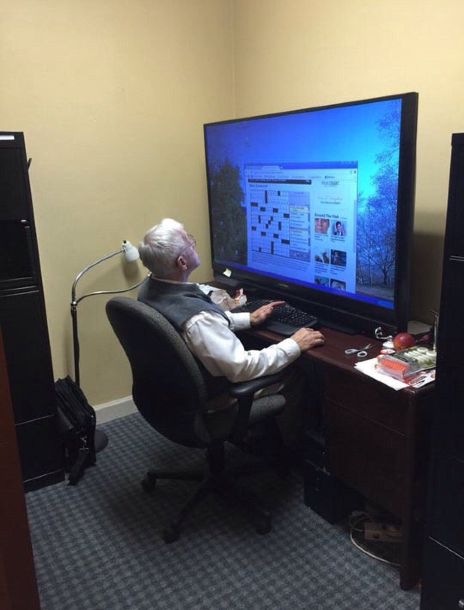

Welcome!
Welcome to the Ultimate PC Guide!
This guide was created by Arul Sharma, Sarbesh Somasundabam, and Baha Haveliwala. We are all PC enthusiasts, and though it would be cool if we could share our knowledge of computers and how they work. In this guide we will cover everything you need to know about a PC, and how to build one.
There are five buttons at the top of this page, one of them leads to this page. The othe buttons each lead to an important mini-guide which will teach you somethign important. To obtain all the information, we recommend going to all the tabs in the order they are listed. Even if you know you don't want to build a PC, this still is a good guide to learn everything about how a PC works.
After completing this guide you should have a complete PC! You will hopefully be looking something like this guy.
If you are ready to start learning about the different parts, click the next button at the top!